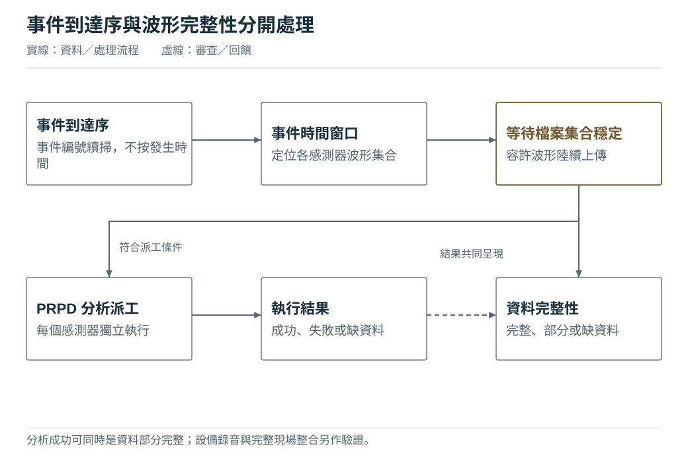

Harbor AI 2.0 子案例
局部放電事件分析
將設備告警接成可追溯的局部放電分析任務，讓使用者同時知道分析結果與資料是否完整。
- 我的工作
- 參與平台派工、資料語意與驗證設計，與團隊串接事件窗口、波形資料及 PRPD 分析服務。
- 成果與狀態
- 已整合平台派工功能，並以真實資料核對完整、部分、缺資料及多感測器情境；設備錄音與前端仍待後續整合。
- 紀錄時間
- 2026 年開發及驗證紀錄
核心問題
將設備告警接成可追溯的局部放電分析任務，讓使用者同時知道分析結果與資料是否完整。
系統與資料流程
- 輸入
- 設備告警事件，以及陸續上傳的事件窗波形。
- 處理方式
- 依資料到達序追蹤新事件，觀察檔案集合是否穩定後派工；執行與資料完整性分別記錄。
- 產出
- 任務結果同時表達分析狀態及資料是否齊全，可呈現成功但資料部分完整。

分析成功可同時是資料部分完整；設備錄音與完整現場整合另作驗證。（點圖放大）核心問題與設計判斷
分析成功與資料完整分成兩個答案
原始波形逐檔到達，已有檔案並不代表事件資料已齊；直接派工會把局部分析包裝成完整結果。
以檔案集合是否穩定作派工依據，獨立保存執行狀態與資料完整性。我參與領域、派工與驗證判斷；團隊及 agents 以實際到達延遲修正等待策略，允許成功但資料部分完整。
平台側合併並實跑完整、部分、缺資料、溢出及多感測器情境；設備觸發錄音與後續整合仍是前提。
補傳事件要依到達序追蹤
離線設備補傳的事件可能發生得很早，依最後事件時間續掃會永久漏掉新到資料。
用到達序追蹤新事件，用事件時間決定分析窗口，兩者各司其職。 團隊與 agents 將續掃改成事件編號，並讓每個感測器獨立派工及終結；驗證同時檢查游標、檔數語意及統計結果。
在多感測器與缺資料情境核對續掃位置、檔案數量及統計語意，讓新到資料不因事件時間較舊而被忽略。
PRPD · WAV · Django · 非同步派工
成果與驗證範圍
已整合平台派工功能，並以真實資料核對完整、部分、缺資料及多感測器情境；設備錄音與前端仍待後續整合。
適用範圍
本頁成果為平台派工及分析服務驗證；設備錄音、前端與完整現場流程仍需整合。
回到工業智慧監控平台